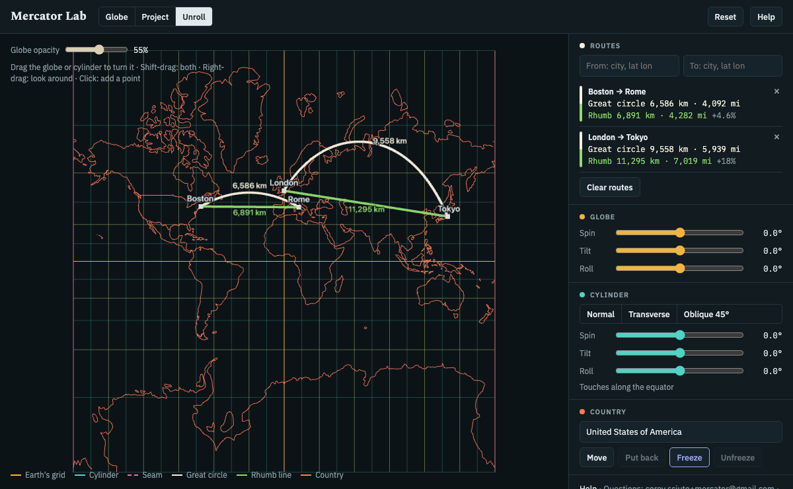

Globe, cylinder, wall map
A Mercator map is a globe wrapped in a cylinder, projected onto it, and unrolled. The three steps at the top walk through it.
- Globe: the Earth alone.
- Project: a cylinder appears around the globe, touching it along the cylinder's equator, and the map moves out onto it. Heights follow ln tan(45° + latitude/2), so angles stay true and areas grow toward the poles.
- Unroll: the cylinder is cut at the seam and laid flat: the wall map, facing you, map north up.

- Drag the globe or the cylinder to turn it; Shift-drag turns both; right-drag looks around. Scroll or pinch to zoom; double-click empty space to reset the view.
- The map depends only on how the globe sits inside the cylinder. Normal touches along the equator, Transverse along a meridian, Oblique along a tilted circle. Turning both together changes nothing.
- Globe opacity sets how see-through the globe is.
- Reset puts the globe, cylinder and view back where this step starts; the step and routes stay.
Routes
Every route is drawn two ways. The great circle is the shortest path; its compass course keeps changing. The rhumb line keeps one compass course the whole way, so it's straight on a Mercator map, and longer.
- Type a city or coordinates (42.36, -71.06, 42.36N 71.06W) in From and To, or click the globe or the map: the first click is From, the second To.
- Routes ride on the globe through every step. The list gives both distances and how much longer the rhumb line is.
- The address keeps your routes, so you can bookmark or share them.
Moving a country
Size-comparison maps slide a country across the globe and redraw it.
- Pick a country, press Move, then click where it should go. The rest of the map is frozen where it was; routes hide until Put back.
- Moved north, it lands where the cylinder stretches more and its borders bend. Example: move the United States over Europe and unroll.
- Freeze keeps a copy of the current map on the cylinder to compare against; Unfreeze removes it.